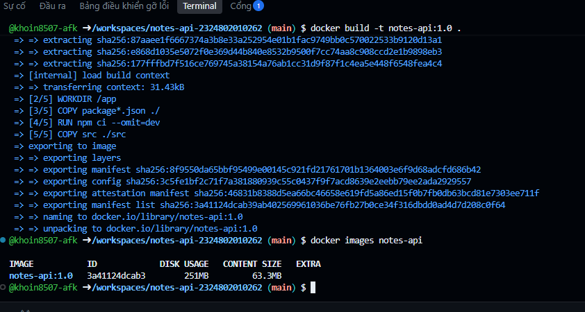
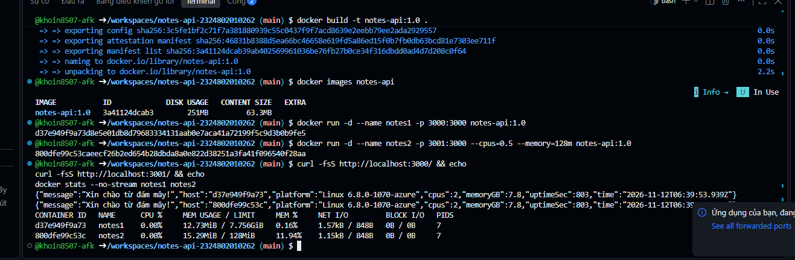
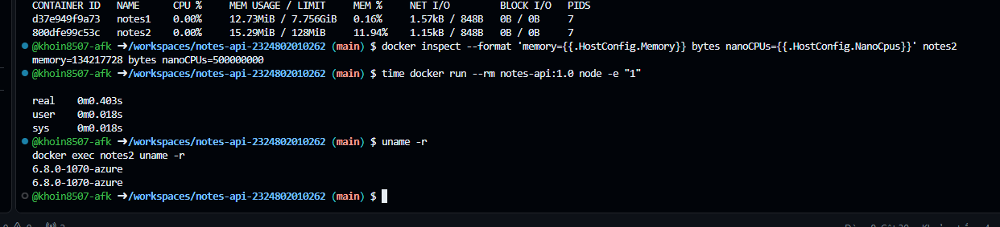
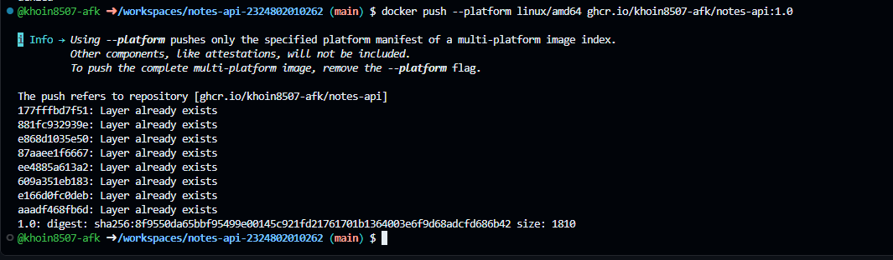
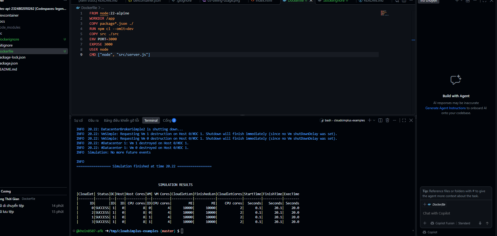
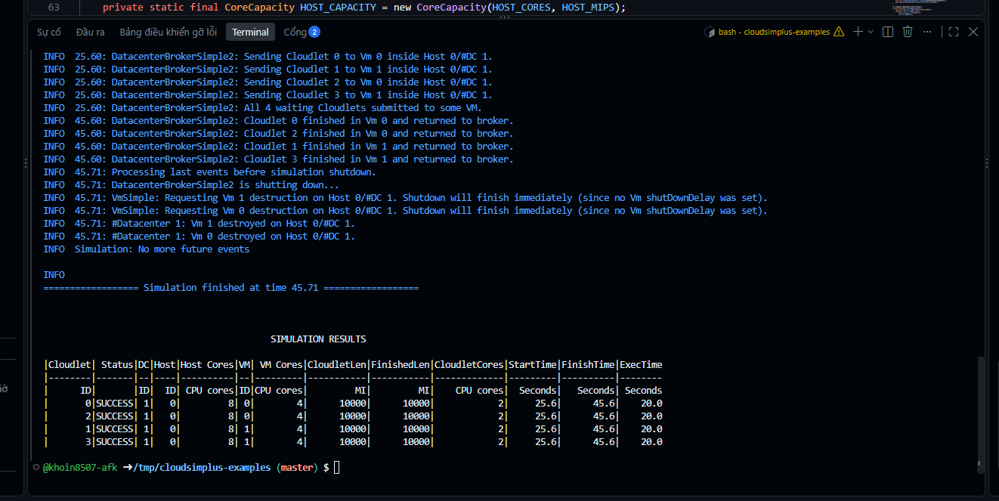
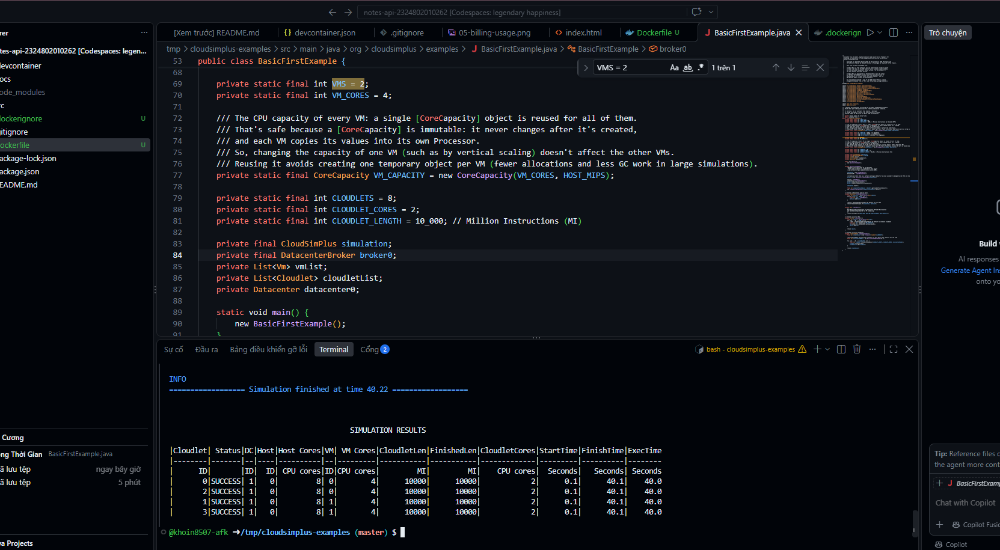
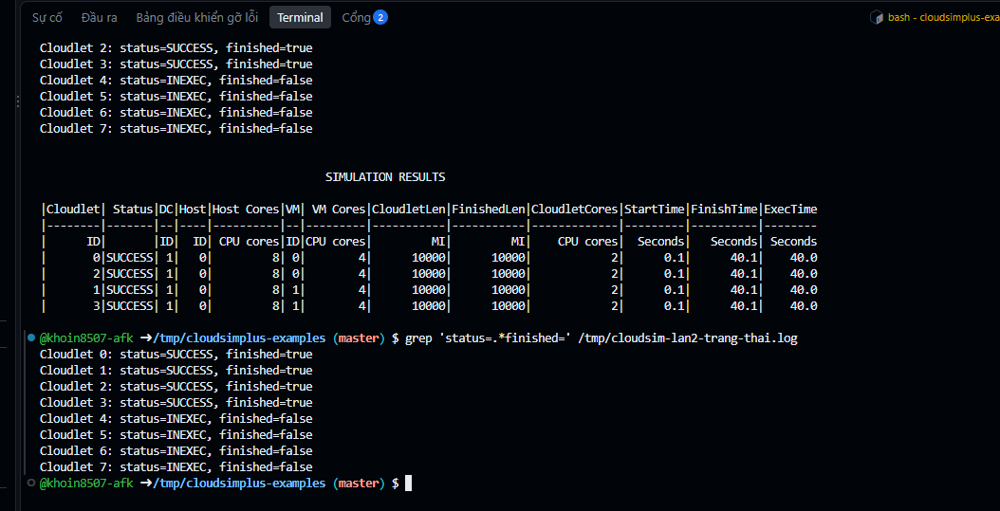
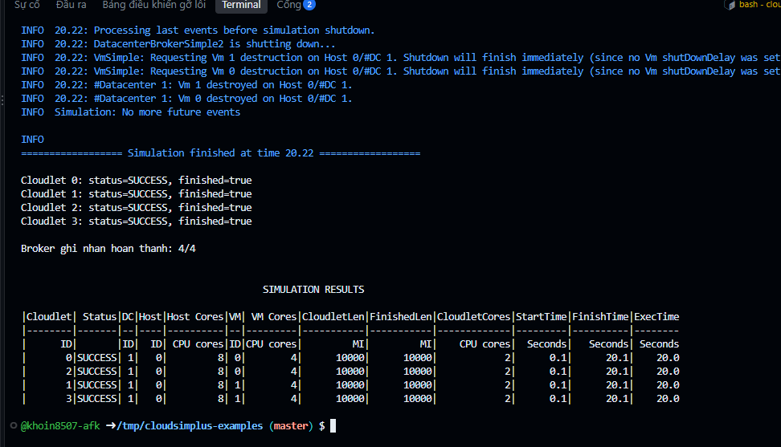
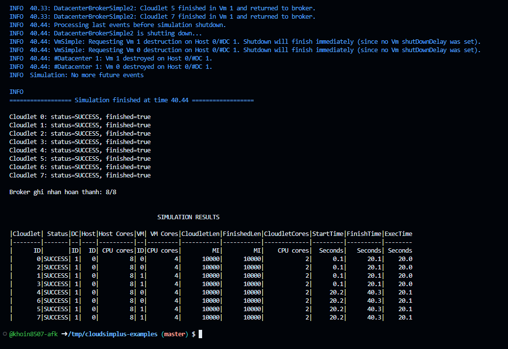

Bài 2. Ảo hóa, container và mô phỏng trung tâm dữ liệu
Họ tên Nguyễn Nguyên Khôi
MSSV 2324802010262 · Lớp D23CNTT03
Ngày thực hiện 12/11/2026
1. Đóng gói API và phát hành image
API Hello Cloud của Bài 1 được đóng gói bằng Docker với image nền
node:22-alpine. Dockerfile dùng npm ci --omit=dev
để cài các thư viện cần khi chạy và khởi động API dưới người dùng
node.
Image ghcr.io/khoin8507-afk/notes-api:1.0 được phát hành
cho linux/amd64. Sau khi đăng xuất GHCR và xóa image
cục bộ, lệnh docker pull tải lại thành công. Digest
trả về khớp với lần push.
2. So sánh máy ảo Codespaces và container
| Tiêu chí | Codespace | Container notes2 |
|---|---|---|
| Thời gian khởi động | Khoảng 8 phút ở Bài 1, gồm sửa lỗi Docker và rebuild. | 0.403 giây theo dòng real. Phép đo gồm tạo container tạm từ image có sẵn, chạy lệnh Node ngắn rồi thoát. |
| Lưu trữ | Hạn mức lưu trữ theo đề là 15 GB-tháng. | Docker hiển thị 251 MB Disk Usage và 63.3 MB Content Size cho image. |
| Nhân hệ điều hành | VM có kernel riêng. uname -r trong Codespace trả về 6.8.0-1070-azure. |
Dùng chung kernel với môi trường chạy Docker. uname -r trong container trả về cùng phiên bản. |
| Mức cô lập | VM cô lập ở lớp ảo hóa và có hệ điều hành khách. | Container cô lập tiến trình bằng namespaces và giới hạn tài nguyên bằng cgroups. |
Hai phép đo thời gian có phạm vi khác nhau. GB-tháng là đơn vị sử dụng lưu trữ, còn MB trong kết quả Docker là đơn vị kích thước.
Hai bản sao trả về hostname khác nhau và cùng báo cpus: 2,
memoryGB: 7.8. Tại thời điểm đo, notes2 dùng
15.29 MiB trên giới hạn 128 MiB. docker inspect xác nhận
giới hạn 0.5 CPU và 134217728 byte RAM.
3. Kết quả mô phỏng CloudSim Plus
| Lần | Thay đổi so với lần 0 | Cloudlet hoàn thành / đã gửi | FinishTime lớn nhất (giây mô phỏng) |
|---|---|---|---|
| 0 | Giữ nguyên, 2 VM, 4 cloudlet, TimeShared | 4/4 | 20.1 |
| 1 | Tăng từ 2 lên 4 VM | 4/4 | 45.6 |
| 2 | Tăng từ 4 lên 8 cloudlet | 4/8 | 40.1, tính trên 4 tác vụ đã hoàn thành |
| 3 | Đổi sang SpaceShared, giữ 2 VM và 4 cloudlet | 4/4 | 20.1 |
Ở lần 1, host có 8 lõi trong khi 4 VM yêu cầu tổng cộng 16 lõi.
Bảng ghi nhận VM 0 và VM 1 thực thi tác vụ. Các cloudlet bắt đầu ở
25.6 giây, muộn hơn lần 0, trong khi thời gian thực thi vẫn là 20.0 giây.
Ở lần 2, cloudlet 4–7 còn ở trạng thái INEXEC khi mô phỏng
kết thúc. Nguyên nhân dừng sớm chưa được xác định.
Phép thử bổ sung với 2 VM, 8 cloudlet và SpaceShared hoàn thành 8/8 tác vụ. Bốn tác vụ đầu hoàn thành ở 20.1 giây. Bốn tác vụ còn lại bắt đầu ở 20.2 giây và hoàn thành ở 40.3 giây.
4. Ảnh minh chứng
Build image và kiểm tra kích thước

Hai bản sao API và giới hạn RAM trong docker stats

Thời gian chạy, phiên bản kernel và giới hạn CPU/RAM

Push thành công image lên GHCR

CloudSim lần 0 — cấu hình gốc

CloudSim lần 1 — tăng số VM

CloudSim lần 2 — tăng số cloudlet

CloudSim lần 2 — trạng thái của cả 8 cloudlet

CloudSim lần 3 — SpaceShared với 4 cloudlet

Thử bổ sung — SpaceShared với 8 cloudlet

5. Trả lời câu hỏi phản biện
-
Vì sao API trong notes2 vẫn báo RAM máy chủ dù đã giới hạn 128 MiB? Ứng dụng Java hoặc Node.js cần lưu ý gì?
API gọi
os.totalmem()để đọc tổng bộ nhớ hệ thống mà Node.js nhìn thấy. Trong lần đo, API vẫn trả vềmemoryGB: 7.8. Docker áp dụng giới hạn 128 MiB cho container qua cgroups.docker statshiển thị15.29 MiB / 128 MiBvàdocker inspectxác nhận giới hạn 134217728 byte. Khi đặt heap cho Java hoặc Node.js, cần dựa vào giới hạn thực tế của container và chừa dung lượng cho bộ nhớ ngoài heap, chẳng hạn bộ đệm, stack và bộ nhớ native. Nếu tổng mức sử dụng vượt giới hạn, tiến trình có thể bị hệ điều hành dừng do hết bộ nhớ. -
Time-shared và space-shared khác nhau ra sao trong lần 3? Nhà cung cấp nên chọn chính sách nào cho gói giá rẻ?
Time-shared chia thời gian CPU giữa các cloudlet đang chạy. Space-shared cấp lõi cho từng cloudlet và cho các tác vụ còn lại đợi đến khi đủ lõi. Ở lần 3, mỗi VM có 4 lõi và nhận hai cloudlet, mỗi tác vụ cần 2 lõi. Cả hai chạy đồng thời, nên cả lần 0 và lần 3 đều hoàn thành 4/4 tác vụ ở 20.1 giây mô phỏng. Trong phép thử bổ sung với 8 cloudlet, SpaceShared chạy thành hai lượt và hoàn thành 8/8 tác vụ ở 40.3 giây.
Với gói giá rẻ có tải biến động và chấp nhận hiệu năng dao động, nhà cung cấp có thể chọn time-shared để chia sẻ CPU và tận dụng công suất nhàn rỗi. Khi nhiều khách hàng cùng tăng tải, thời gian xử lý có thể tăng.
-
Mô phỏng giúp ích gì trước khi thuê hạ tầng thật? Kết quả có thể lệch thực tế ở đâu?
Mô phỏng cho phép thử số lượng host, VM, tác vụ và chính sách lập lịch trước khi trả tiền thuê máy. Ví dụ, lần 1 yêu cầu tổng cộng 16 lõi VM trên host có 8 lõi và chỉ ghi nhận hai VM chạy cloudlet. Kết quả mô phỏng phụ thuộc các giả định về tải, CPU, mạng và lưu trữ. Trên hạ tầng thật, độ trễ mạng, I/O, tải biến động và tranh chấp tài nguyên có thể làm thời gian xử lý thay đổi.